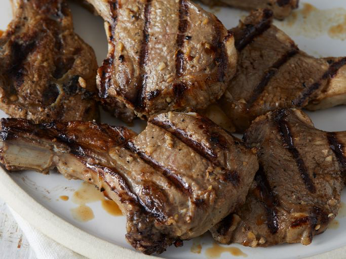

Oven Baked Lamb Chops

This oven-baked lamb chops recipe is a simple and delicious way to prepare lamb. The chops are seasoned with herbs and spices, then baked to perfection in the oven. Ideal for a special occasion or a hearty weeknight dinner.
Ingredients
- 4 lamb chops
- 2 tablespoons olive oil
- 2 cloves garlic, minced
- 1 tablespoon fresh rosemary, chopped
- 1 tablespoon fresh thyme, chopped
- 1 teaspoon paprika
- Salt and black pepper to taste
- 1 lemon, sliced (for garnish)
Steps
- Preheat your oven to 400°F (200°C).
- In a small bowl, mix the olive oil, minced garlic, chopped rosemary, chopped thyme, paprika, salt, and black pepper.
- Rub the lamb chops with the seasoning mixture, making sure they are well-coated on both sides.
- Place the lamb chops on a baking sheet or in a baking dish.
- Bake in the preheated oven for 15-20 minutes, or until the internal temperature reaches 145°F (63°C) for medium-rare or 160°F (71°C) for medium.
- Remove the lamb chops from the oven and let them rest for 5 minutes before serving.
- Garnish with lemon slices and serve.